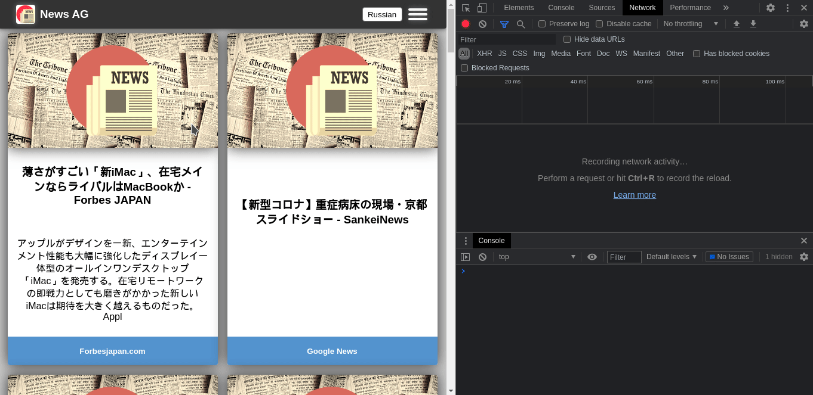
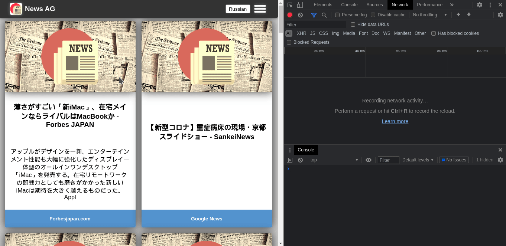

Chapter 4 - Preview
Translator:
Weather:
Weather charts:
Movies & TV series search:

Log bot telegram:
Well, my pet project became more than statick html hosted on Gihub Pages thats why I created this simple page to describe all features implemented in News-AG.
News-AG is a news aggregator based on News API (https://newsapi.org) it accumulate news links from all over the world (well OK not all over the world only Canada Cina Germany France Great Britain India Italy Japan Russia and USA) all links cashed on serverside due to CORS policy (cause News-AG opens pages in sandboxed iframe). Why sandboxed? No javascript, no pop-ups, no commercial - easy =D (honestly there is some commercial in frames, but comon, its not an Add Block!) Also there is a weather and forecast service based on OWM API (https://openweathermap.org/api) it can show weather and forecast based on your geolocation and collect data in nice charts thanks to Charts.js (https://www.chartjs.org) also it shows your location on the map thanks to OSM service (https://www.openstreetmap.org) And ofcorse it uses Google translate API to translate (Oh REALY ???) Googletrans python library to be precise (https://pypi.org/project/googletrans)
Here is a simple shema of News-AG architecture:
I think it's better to put all technologies in tables and firstly I will show all used langwiges:
| # | Used lang. | Purpose |
|---|---|---|
| 1 | HTML | To create standard markup |
| 2 | CSS | To define styles of pages |
| 3 | javaScript | To program the behavior of web pages on clientside & create serverside functions |
| 4 | Python | To make serverside API requests, collect and format data for clientside |
| 5 | Shell script | To configure web server and organize simple loging |
And now all used technologies:
| # | Used tech. | Purpose |
|---|---|---|
| 1 | Docker | To keep all in container and simply implement in any env. |
| 2 | NGINX | Just best and easy to use web server |
| 3 | Node JS | To handle clientside requests and init backend scripts |
Translator:
Weather:
Weather charts:
Movies & TV series search:
Log bot telegram: